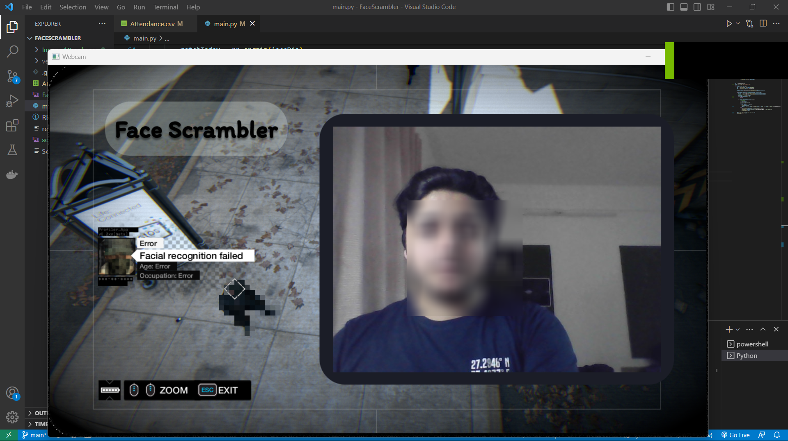

The project uses a webcam to capture a live video stream. The captured video is processed frame by frame to detect faces using the face_recognition library. The faces are then compared to a pre-defined dataset of known faces to recognize the individuals.
If a recognized face is detected, the program checks if the individual's name is in the list of names specified in the script. If the name is found, the program blurs the face using OpenCV's blur function. If the name is not found, the program draws a rectangle around the face and displays the name of the individual. The program also marks the attendance of the recognized individual in a CSV file.
Working Image
Future Aspects
The Face Scrambler project can be further enhanced to incorporate object recognition and tracking to protect the privacy of objects in the video stream.
Without Privacy there was no point being an Individual.by: Jonathan Franzen
TThe project can also be extended to support multiple cameras, enabling its usage in a wider range of applications. Additionally, the project can be integrated into existing security systems to enhance their privacy protection capabilities.
Summary
The Face Scrambler project is a computer vision-based solution that uses facial recognition and image processing techniques to protect the privacy of individuals captured in a video stream. The project is implemented using the OpenCV and face_recognition libraries and can be used in various applications such as surveillance systems, public cameras, and social media.
The project can be further enhanced to support object recognition and tracking, multiple camera support, and integration with existing security systems.
Project Github Repository